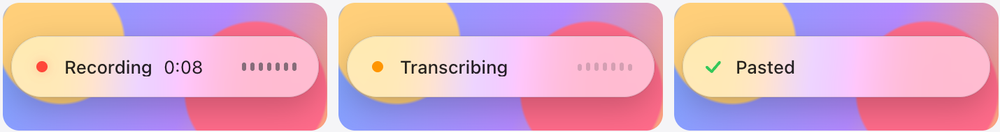
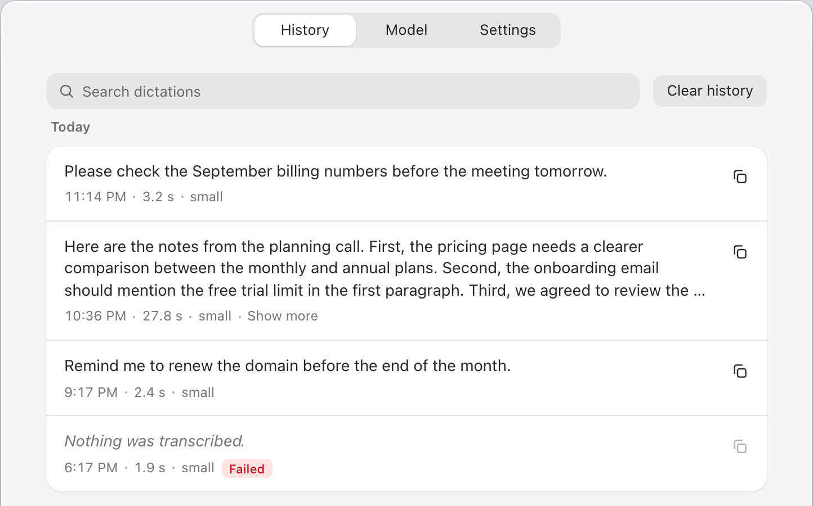

Free, private, offline speech-to-text for Mac and Windows
Hold a shortcut, talk, let go: your words are typed into any app. Take meeting notes too, with speaker names and a summary. A small Whisper model runs on your own laptop. No cloud, no account, no subscription.
macOS (Apple silicon)
brew install uv
uvx local-sttWindows 10 and 11
winget install --id=astral-sh.uv -e
uvx local-sttuv is the only thing you install yourself. local-stt then installs itself in Applications or the Start menu and opens. On Windows, open a new PowerShell after installing uv.

Voice typing in any app
Push to talk
Hold Fn + Shift on a Mac or Ctrl + Alt on Windows, speak, and let go. The text is pasted where your cursor is: mail, Slack, docs, your code editor, the browser.
Hands-free
Press Fn + Shift + Space (Windows: Ctrl + Alt + Space) to keep listening while you think out loud. Esc cancels.
Works offline
After a one-time model download, dictation never needs the internet. The default model is 181 MB.
99 languages
Speak Hindi, Bengali, Tamil, Spanish, Chinese and more. Get English text, or keep the language you spoke.
Smart formatting
Fillers go, spacing is fixed, and "point one, point two" becomes a numbered list. Rules in the app, the same every time.
No telemetry
No analytics, no crash reporting, no account. Audio is never written to disk.

Private meeting notes
No bot joins the call
Works with Zoom, Google Meet, Microsoft Teams and Slack. local-stt transcribes your microphone and what your computer plays, on your computer.
Speaker names
Each voice in the call is told apart and named from the call app's video tiles, so the transcript says who said what.
Local summaries
An optional local model writes an overview, what each person said, and the action items with their owners. The note never leaves your computer.
An open-source alternative to Wispr Flow and Superwhisper
local-stt does the same job, push-to-talk dictation into any app, with a speech model that runs entirely on your device. It is MIT licensed, free with no paid tier or usage limits, and works the same way on macOS and Windows. Built with Rust, Tauri and whisper.cpp.
FAQ
- Is it really free?
- Yes. MIT licensed, no paid features, no limits, no account.
- Does it work without internet?
- Yes, after the first model download.
- Is my voice stored or sent anywhere?
- No. Audio stays in memory and is dropped after each dictation. The app only goes online to download a model, for an optional daily version check, and for updates you start.
- What do I need?
- A Mac with Apple silicon (M1 or later) on macOS 11 or later, or a 64-bit PC with Windows 10 or 11. About 4 GB of memory and 200 MB of disk for the default model. Meeting notes need macOS 14.6 or later on a Mac.
- Does it work on Linux?
- Not yet. The shortcut and the paste need code for each desktop system.
- How is this different from built-in dictation?
- It runs a model you choose, entirely on your device, translates to English if you want, keeps a searchable history, and works the same way on Mac and Windows.